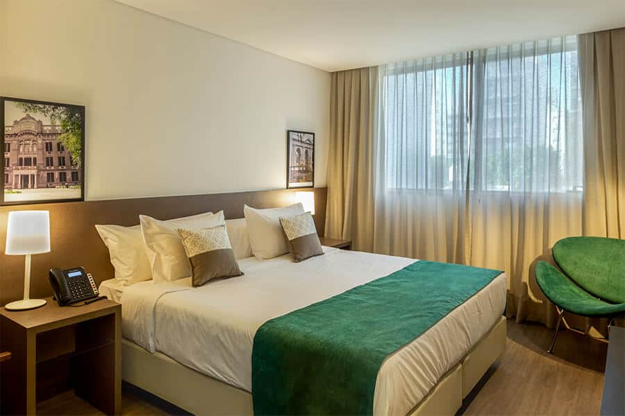
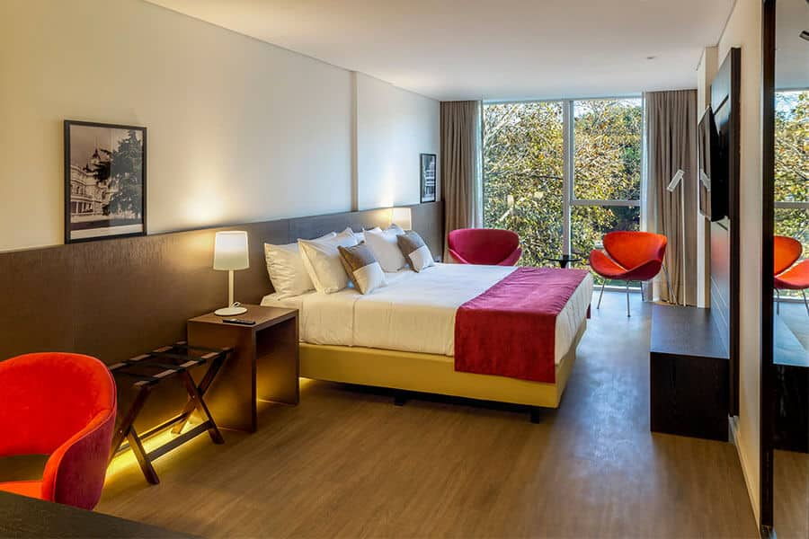
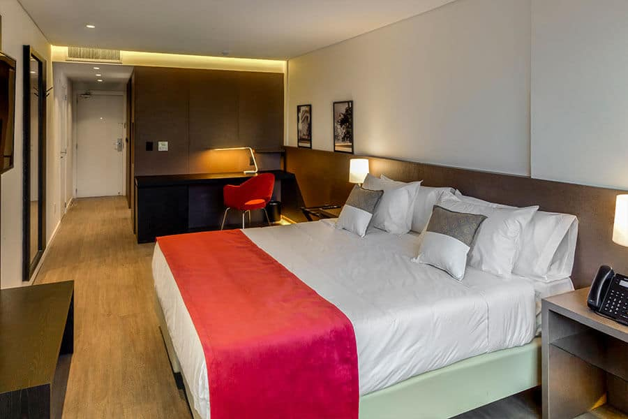
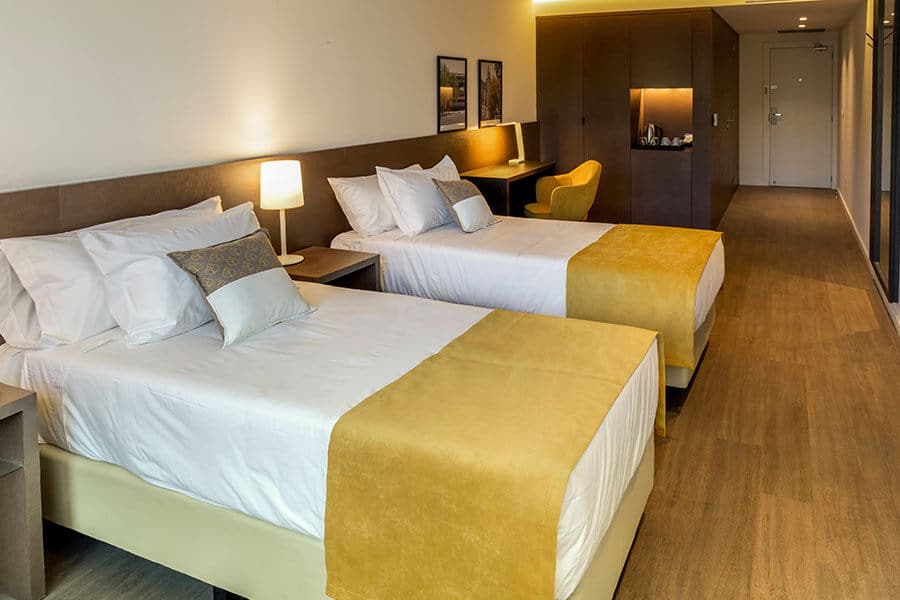

La mejor ubicación en Córdoba Capital
Con una inigualable ubicación en el centro de la ciudad, es el primer hotel de Córdoba ubicado en la Plaza Colón – Av Colón Alberdi 951, Córdoba – cerca de restaurantes, teatros y otros puntos de interés.
Habitaciones hotel San José

- Habitación Classic
- Moderna y confortable habitación totalmente equipada para que puedas disfrutar de tu estadía por trabajo o turismo en la ciudad.
- Posee Climatización individual, Ducha, Minibar, Pava eléctrica, Secador de pelo, TV LED

- Habitación Classic City View
- Moderna y confortable habitación totalmente equipada para que puedas disfrutar de tu estadía por trabajo o turismo en la ciudad. Con las mejores vistas a la ciudad de Córdoba.
- Posee Climatización individual, Ducha, Escritorio, Minibar, Pava eléctrica, Secador de pelo, TV LED

- Habitación Suite
- Amplias y modernas, ideal para que puedas disfrutar de tu estadía por trabajo o turismo en la ciudad. Con las mejores vistas a la ciudad de Córdoba.
- Posee Cafetera, Climatización individual, Ducha, Escritorio, Minibar, Pava eléctrica, Secador de pelo, TV LED

- Habitación accesible
- Amplias, modernas y accesibles. Ideal para que puedas disfrutar de tu estadía por trabajo o turismo en la ciudad. Con las mejores vistas a la Plaza Colón
- Posee Climatización individual, Ducha adaptada, Escritorio, Minibar, Pava eléctrica, Secador de pelo, TV LED